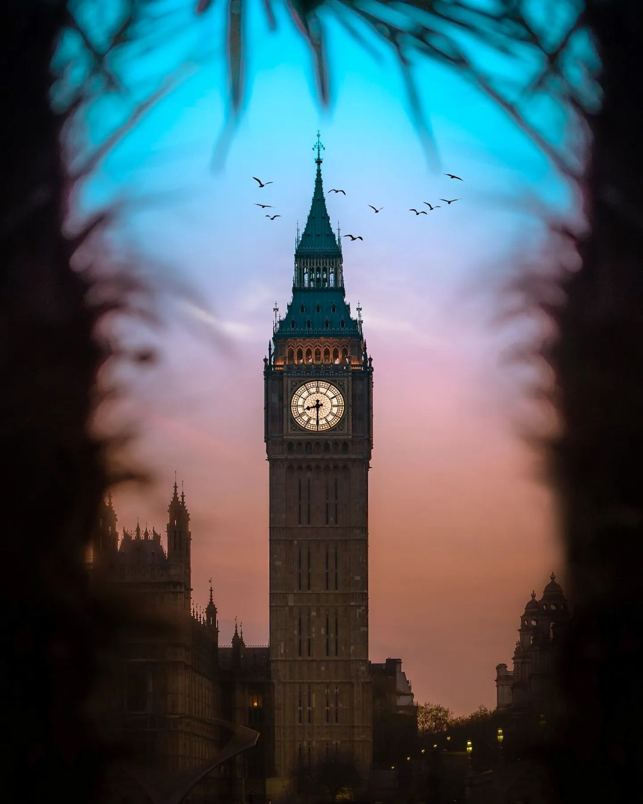

ようこそWelcome👋
I'm Victor and I'm
not a web developer
(yet).

I'm currently a finance 💰 person in London, UK.
Statement
This website is meant to fulfill one of the requirements for admission to the Founders & Coders foundation course.
I love eating and discovering new restaurants. I always wanted to become a software engineer, but I let social pressures influence me and made a different choice.
I learned a bunch of Python on my own and I am now learning web development using HTML, CSS, and JavaScript.
I love building things!
I have never considered myself a creative person, but I am a hugely creative problem solver.
趣味は日本語を勉強することです～ My hobby is studying Japanese
I would like to become a web developer because of the
Believe it or not, the idea for this game came to me in a dream. I'd just started learning HTML/CSS/JS and I noticed how most of the work is done using squares or rectangles, so I thought I would leverage that and create a game based on squares.
I did not follow any tutorials or walkthroughs to build this game.
Key features:
I did not follow any tutorials or walkthroughs to build this game.
Key features:
- Targets are randomly generated from the edges of the screen
- Targets are fired towards the target grid, with the angle of the possible trajectories decreasing as the grid decreases in size
- See-through target grid provides an additional visual complication
- Only score a point when the target is within the grid
- Scoring system
- Top score retained in local memory
- Levelling up system. Levelling up results in:
- Change in color palette
- Increased target movement speed
- Reduced target grid size
- User recovers a life if at less than max health
- 1UP animation in case the user has recovered a life
- Fully responsive design covering virtually any device / screen size